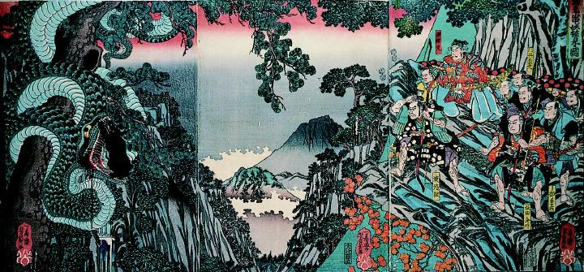

熊に襲われる大蛇。口が裂け、血が噴出している。大蛇の鱗は緑色で、巨木に巻きついている。
著作者：歌川芳員／出典：親書誌：A5_pushkin_0035：頼光山中ニ妖怪見る図；ライゴウサンチュニヨウカイヲミルズ／日付：2011／資源識別子：A5_pushkin_0035_0001_0000
Copyright (c)2010- International Research Center for Japanese Studies, Kyoto, Japan. All rights reserved.